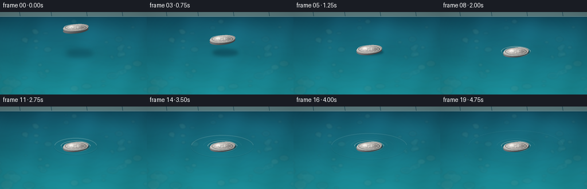
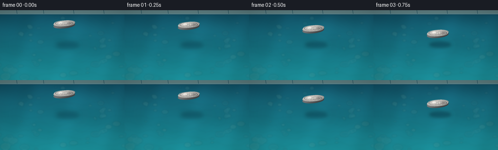

CODING AGENTS AS PIXEL WORLD MODELS
traex/GPT-5.6-Sol · mechanics_0012
点击播放 · 原生 RGB 像素
逐轮保存的候选
回放视频、检查图与代码变化。
每份候选均可单独播放。实际图片检查记录在下方工具轨迹中。
候选 01播放与检查图
点击播放 · 原生 RGB 像素

展开代码变化
--- 上一保存版本
+++ 本次保存版本
@@ -0,0 +1,242 @@
+from pathlib import Path
+import json, math
+import numpy as np
+from PIL import Image, ImageDraw, ImageFilter
+import artifact_io
+
+CASE = Path(__file__).resolve().parent
+SPEC = json.loads((CASE / 'task_spec.json').read_text())
+W, H, N, FPS = SPEC['width'], SPEC['height'], SPEC['frames'], SPEC['fps']
+S = 3
+WW, HH = W*S, H*S
+rng = np.random.default_rng(12017)
+
+# Fixed, subtle pool-bottom details for temporal coherence.
+pebbles = []
+for _ in range(52):
+ x = rng.uniform(-10, W+10); y = rng.uniform(13, H+10)
+ rx = rng.uniform(2.5, 9.0) * (0.55 + y/H*0.75)
+ ry = rx * rng.uniform(.45, .78)
+ c = rng.choice([
+ (42,121,128), (77,145,143), (31,112,123), (104,158,145),
+ (27,100,113), (86,137,128), (48,132,137)
+ ])
+ pebbles.append((x,y,rx,ry,c,rng.uniform(-.8,.8)))
+
+# Coordinate arrays at supersampled resolution.
+yy, xx = np.mgrid[0:HH, 0:WW].astype(np.float32)
+X, Y = xx/S, yy/S
+
+def smoothstep(x):
+ x = np.clip(x, 0, 1)
+ return x*x*(3-2*x)
+
+def alpha_over(base, layer):
+ a = np.asarray(layer, np.float32)[...,3:4] / 255.0
+ rgb = np.asarray(layer, np.float32)[...,:3]
+ return (np.asarray(base, np.float32)*(1-a) + rgb*a).astype(np.uint8)
+
+def ellipse_layer(cx, cy, rx, ry, fill, blur=0):
+ im = Image.new('RGBA', (WW,HH), (0,0,0,0))
+ d = ImageDraw.Draw(im)
+ d.ellipse(((cx-rx)*S,(cy-ry)*S,(cx+rx)*S,(cy+ry)*S), fill=fill)
+ return im.filter(ImageFilter.GaussianBlur(blur*S)) if blur else im
+
+def pool_background(t):
+ # Blue-green depth gradient with coherent, slowly moving water modulation.
+ q = Y / H
+ top = np.array([14, 72, 91], np.float32)
+ bot = np.array([28, 151, 158], np.float32)
+ rgb = top[None,None,:]*(1-q[...,None]) + bot[None,None,:]*q[...,None]
+ waves = (2.7*np.sin(X*.080 + Y*.034 + t*.48) +
+ 1.8*np.sin(X*.035 - Y*.105 - t*.32) +
+ 1.0*np.cos(X*.15 + Y*.048 + t*.24))
+ rgb += waves[...,None] * np.array([.25, .8, 1.0])[None,None,:]
+ # Soft sky reflection in the upper half.
+ glow = np.exp(-((Y-35)/29)**2) * (0.35+0.65*np.exp(-((X-170)/100)**2))
+ rgb += glow[...,None] * np.array([5,14,15])
+ rgb = np.clip(rgb,0,255).astype(np.uint8)
+ im = Image.fromarray(rgb, 'RGB').convert('RGBA')
+
+ # Pool bottom pebbles seen through water; deliberately muted/soft.
+ p_layer = Image.new('RGBA', (WW,HH), (0,0,0,0)); pd = ImageDraw.Draw(p_layer)
+ for x,y,rx,ry,c,phase in pebbles:
+ wobx = .45*math.sin(t*.45+phase)
+ box = ((x-rx+wobx)*S,(y-ry)*S,(x+rx+wobx)*S,(y+ry)*S)
+ pd.ellipse(box, fill=(*c, 40), outline=(150,202,190,24), width=max(1,S))
+ p_layer = p_layer.filter(ImageFilter.GaussianBlur(1.25*S))
+ im = Image.alpha_composite(im, p_layer)
+
+ # Caustic threads, blurred and low contrast.
+ ca = Image.new('RGBA',(WW,HH),(0,0,0,0)); cd=ImageDraw.Draw(ca)
+ for k in range(8):
+ y0 = 48 + k*14
+ pts=[]
+ for x in range(-8, W+9, 4):
+ y = y0 + 3.0*math.sin(x*.085 + k*1.31 + t*.36) + 1.3*math.sin(x*.19-k)
+ pts.append((x*S,y*S))
+ cd.line(pts, fill=(168,241,226,20), width=S)
+ ca=ca.filter(ImageFilter.GaussianBlur(1.3*S))
+ im=Image.alpha_composite(im,ca)
+
+ # Stone coping at the distant top edge, grounding the scene as a pool.
+ rim=Image.new('RGBA',(WW,HH),(0,0,0,0)); rd=ImageDraw.Draw(rim)
+ rd.rectangle((0,0,WW,7*S), fill=(92,126,126,255))
+ rd.rectangle((0,7*S,WW,9*S), fill=(180,205,194,115))
+ rd.line((0,9*S,WW,9*S), fill=(6,49,67,135), width=S)
+ # irregular fine joints
+ for x in [34,89,151,213]:
+ rd.line((x*S,0,(x+1)*S,7*S), fill=(56,87,89,150), width=S)
+ im=Image.alpha_composite(im,rim)
+ return np.asarray(im.convert('RGB'))
+
+def draw_ripples(base, cx, cy, age):
+ if age < 0: return base
+ layer = Image.new('RGBA',(WW,HH),(0,0,0,0)); d=ImageDraw.Draw(layer)
+ # Repeated weak wavefronts emitted as the coin settles, with first wave dominant.
+ emissions = [0.0, .52, 1.12, 1.78, 2.48]
+ for ei,e in enumerate(emissions):
+ a = age-e
+ if a < 0: continue
+ rad = 10 + a*(23 if ei==0 else 17)
+ fade = max(0.0, 1-a/(3.6 if ei==0 else 2.2)) * (1.0 if ei==0 else .48)
+ if fade <= 0: continue
+ ry = 3.5 + rad*.29
+ box=((cx-rad)*S,(cy-ry)*S,(cx+rad)*S,(cy+ry)*S)
+ # Shadow/highlight pair creates a tiny refractive ridge rather than a graphic ring.
+ d.arc(box, 184, 356, fill=(207,250,241,int(92*fade)), width=max(S,2*S))
+ d.arc((box[0],box[1]+1.2*S,box[2],box[3]+1.2*S), 4, 179,
+ fill=(3,68,86,int(72*fade)), width=max(S,2*S))
+ d.arc(box, 8, 176, fill=(164,231,224,int(46*fade)), width=S)
+ layer=layer.filter(ImageFilter.GaussianBlur(.45*S))
+ return alpha_over(base,layer)
+
+def coin_geometry(t):
+ contact=1.55
+ if t < contact:
+ p=smoothstep(t/contact)
+ cy=27 + 42*p
+ # nearly horizontal all the way down; apparent thickness diminishes on settling
+ ry=6.0 + 1.4*p
+ height=1-p
+ else:
+ age=t-contact
+ cy=69 + 1.05*math.exp(-age*2.2)*math.sin(age*7.0)
+ ry=7.4
+ height=0
+ return 132.0,cy,22.5,ry,height,contact
+
+def add_coin(base,t):
+ cx,cy,rx,ry,height,contact=coin_geometry(t)
+ # Contact ripples go behind the coin.
+ base=draw_ripples(base,cx,69,t-contact)
+
+ # Soft cast shadow. It converges and sharpens as the coin reaches the water.
+ shx=cx+3+height*4; shy=69.8+height*2
+ shadow=ellipse_layer(shx,shy,rx*(.92+height*.12),4.8+height*2.0,
+ (0,25,38,int(105-38*height)), blur=1.3+2.8*height)
+ base=alpha_over(base,shadow)
+
+ # Meniscus/depression only after contact.
+ if t >= contact:
+ age=t-contact
+ men=Image.new('RGBA',(WW,HH),(0,0,0,0)); md=ImageDraw.Draw(men)
+ strength=min(1,age/.22)
+ md.ellipse(((cx-rx-3)*S,(cy-ry-2.0)*S,(cx+rx+3)*S,(cy+ry+2.6)*S),
+ fill=(3,61,77,int(66*strength)), outline=(176,237,226,int(118*strength)), width=S)
+ md.arc(((cx-rx-4)*S,(cy-ry-2.2)*S,(cx+rx+4)*S,(cy+ry+3)*S),184,356,
+ fill=(220,255,246,int(142*strength)),width=S)
+ men=men.filter(ImageFilter.GaussianBlur(.45*S))
+ base=alpha_over(base,men)
+
+ arr=np.asarray(base,np.float32)
+ # Rotated elliptical local coordinates.
+ ang=math.radians(-6)
+ dx=X-cx; dy=Y-cy
+ u=(math.cos(ang)*dx+math.sin(ang)*dy)/rx
+ v=(-math.sin(ang)*dx+math.cos(ang)*dy)/ry
+ r=np.sqrt(u*u+v*v)
+
+ # Visible thickness/rim underneath, mostly apparent before contact.
+ side_shift=2.6 + 1.7*height
+ dys=Y-(cy+side_shift)
+ us=(math.cos(ang)*dx+math.sin(ang)*dys)/rx
+ vs=(-math.sin(ang)*dx+math.cos(ang)*dys)/ry
+ rs=np.sqrt(us*us+vs*vs)
+ side=(rs<=1)&(Y>cy)
+ side_col=np.zeros_like(arr)
+ side_light=np.clip(96 + 35*(1-us) - 35*vs,45,145)
+ side_col[...,0]=side_light*.76; side_col[...,1]=side_light*.79; side_col[...,2]=side_light*.78
+ arr[side]=side_col[side]
+
+ mask=r<=1
+ # Silver alloy with directional specular reflection and brushed texture.
+ directional=28*(-.42*u-.72*v)
+ radial=21*(1-r)
+ glint=72*np.exp(-((u+.34)**2/.035 + (v+.28)**2/.11))
+ dark_arc=-37*np.exp(-((u-.58)**2/.075 + (v-.05)**2/.35))
+ brushed=5*np.sin(44*r + 8*u) + 2.3*np.sin(96*r)
+ val=np.clip(166+directional+radial+glint+dark_arc+brushed,78,242)
+ coin=np.stack([val*1.02,val*1.01,val*.96],axis=-1)
+ arr[mask]=coin[mask]
+ base=np.clip(arr,0,255).astype(np.uint8)
+
+ # Crisp embossed details and rim, softly anti-aliased by supersampling.
+ deco=Image.new('RGBA',(WW,HH),(0,0,0,0)); dd=ImageDraw.Draw(deco)
+ def ep(rad, color, width=1):
+ dd.ellipse(((cx-rx*rad)*S,(cy-ry*rad)*S,(cx+rx*rad)*S,(cy+ry*rad)*S),
+ outline=color,width=max(S,int(width*S)))
+ ep(.91,(247,247,231,145),.75)
+ ep(.83,(63,70,69,150),.65)
+ ep(.76,(224,227,215,90),.55)
+ # Central embossed compass/star motif (reads as minted metal, not painted ink).
+ star=[]
+ for j in range(16):
+ a=-math.pi/2+j*math.pi/8
+ rr=(.38 if j%2==0 else .16)
+ star.append(((cx+math.cos(a)*rx*rr)*S,(cy+math.sin(a)*ry*rr)*S))
+ dd.line(star+[star[0]],fill=(64,72,72,115),width=S,joint='curve')
+ # Offset highlight gives embossed relief.
+ star_hi=[(x-.45*S,y-.38*S) for x,y in star]
+ dd.line(star_hi+[star_hi[0]],fill=(245,246,230,125),width=S)
+ # Mint dots around inner ring.
+ for a in np.linspace(0,2*math.pi,13)[:-1]:
+ px=cx+math.cos(a)*rx*.67; py=cy+math.sin(a)*ry*.67
+ rr=.55*S
+ dd.ellipse((px*S-rr,py*S-rr,px*S+rr,py*S+rr),fill=(236,239,225,120))
+ base=alpha_over(base,deco)
+
+ # At contact, a narrow waterline highlight crosses the lower edge of the coin.
+ if t>=contact:
+ age=t-contact; st=min(1,age/.3)
+ wl=Image.new('RGBA',(WW,HH),(0,0,0,0)); wd=ImageDraw.Draw(wl)
+ pts=[]
+ for x in np.linspace(cx-rx*.91,cx+rx*.91,42):
+ rel=(x-cx)/rx
+ y=cy+ry*math.sqrt(max(0,1-rel*rel))-.30
+ pts.append((x*S,y*S))
+ wd.line(pts,fill=(218,255,246,int(125*st)),width=S)
+ wl=wl.filter(ImageFilter.GaussianBlur(.25*S))
+ base=alpha_over(base,wl)
+ return base
+
+def vignette_and_grade(im):
+ a=np.asarray(im,np.float32)
+ dx=(X-W*.5)/(W*.72); dy=(Y-H*.51)/(H*.78)
+ vig=np.clip(1-.18*(dx*dx+dy*dy),.77,1)
+ a*=vig[...,None]
+ # subtle warm-cool cinematic grade
+ a[...,0]*=1.015; a[...,2]*=1.025
+ return np.clip(a,0,255).astype(np.uint8)
+
+frames=[]
+for i in range(N):
+ t=i/FPS
+ bg=pool_background(t)
+ fr=add_coin(bg,t)
+ fr=vignette_and_grade(fr)
+ out=Image.fromarray(fr).resize((W,H),Image.Resampling.LANCZOS)
+ frames.append(np.asarray(out.convert('RGB'),dtype=np.uint8))
+frames=np.stack(frames,axis=0)
+artifact_io.save(frames, CASE)
+print(f'saved {frames.shape} {frames.dtype} to {CASE}')
可观测工具轨迹
实际执行的命令与返回图片。
命令 1exit 0
/bin/bash -lc "cat prompt.txt && printf '\\n--- GENERATION_RULES.md ---\\n' && cat GENERATION_RULES.md"
命令 2exit 0
/bin/bash -lc "cat task_spec.json && printf '\\n--- FILES ---\\n' && find . -maxdepth 2 -type f -printf '%p %s bytes\\n' | sort"
命令 3exit 0
/bin/bash -lc "sed -n '1,240p' artifact_io.py"
命令 4exit 0
/bin/bash -lc "cat > generate.py <<'PY'
from pathlib import Path
import json, math
import numpy as np
from PIL import Image, ImageDraw, ImageFilter
import artifact_io
CASE = Path(__file__).resolve().parent
SPEC = json.loads((CASE / 'task_spec.json').read_text())
W, H, N, FPS = SPEC['width'], SPEC['height'], SPEC['frames'], SPEC['fps']
S = 3
WW, HH = W*S, H*S
rng = np.random.default_rng(12017)
# Fixed, subtle pool-bottom details for temporal coherence.
pebbles = []
for _ in range(52):
x = rng.uniform(-10, W+10); y = rng.uniform(13, H+10)
rx = rng.uniform(2.5, 9.0) * (0.55 + y/H*0.75)
ry = rx * rng.uniform(.45, .78)
c = rng.choice([
(42,121,128), (77,145,143), (31,112,123), (104,158,145),
(27,100,113), (86,137,128), (48,132,137)
])
pebbles.append((x,y,rx,ry,c,rng.uniform(-.8,.8)))
# Coordinate arrays at supersampled resolution.
yy, xx = np.mgrid[0:HH, 0:WW].astype(np.float32)
X, Y = xx/S, yy/S
def smoothstep(x):
x = np.clip(x, 0, 1)
return x*x*(3-2*x)
def alpha_over(base, layer):
a = np.asarray(layer, np.float32)[...,3:4] / 255.0
rgb = np.asarray(layer, np.float32)[...,:3]
return (np.asarray(base, np.float32)*(1-a) + rgb*a).astype(np.uint8)
def ellipse_layer(cx, cy, rx, ry, fill, blur=0):
im = Image.new('RGBA', (WW,HH), (0,0,0,0))
d = ImageDraw.Draw(im)
d.ellipse(((cx-rx)*S,(cy-ry)*S,(cx+rx)*S,(cy+ry)*S), fill=fill)
return im.filter(ImageFilter.GaussianBlur(blur*S)) if blur else im
def pool_background(t):
# Blue-green depth gradient with coherent, slowly moving water modulation.
q = Y / H
top = np.array([14, 72, 91], np.float32)
bot = np.array([28, 151, 158], np.float32)
rgb = top[None,None,:]*(1-q[...,None]) + bot[None,None,:]*q[...,None]
waves = (2.7*np.sin(X*.080 + Y*.034 + t*.48) +
1.8*np.sin(X*.035 - Y*.105 - t*.32) +
1.0*np.cos(X*.15 + Y*.048 + t*.24))
rgb += waves[...,None] * np.array([.25, .8, 1.0])[None,None,:]
# Soft sky reflection in the upper half.
glow = np.exp(-((Y-35)/29)**2) * (0.35+0.65*np.exp(-((X-170)/100)**2))
rgb += glow[...,None] * np.array([5,14,15])
rgb = np.clip(rgb,0,255).astype(np.uint8)
im = Image.fromarray(rgb, 'RGB').convert('RGBA')
# Pool bottom pebbles seen through water; deliberately muted/soft.
p_layer = Image.new('RGBA', (WW,HH), (0,0,0,0)); pd = ImageDraw.Draw(p_layer)
for x,y,rx,ry,c,phase in pebbles:
wobx = .45*math.sin(t*.45+phase)
box = ((x-rx+wobx)*S,(y-ry)*S,(x+rx+wobx)*S,(y+ry)*S)
pd.ellipse(box, fill=(*c, 40), outline=(150,202,190,24), width=max(1,S))
p_layer = p_layer.filter(ImageFilter.GaussianBlur(1.25*S))
im = Image.alpha_composite(im, p_layer)
# Caustic threads, blurred and low contrast.
ca = Image.new('RGBA',(WW,HH),(0,0,0,0)); cd=ImageDraw.Draw(ca)
for k in range(8):
y0 = 48 + k*14
pts=[]
for x in range(-8, W+9, 4):
y = y0 + 3.0*math.sin(x*.085 + k*1.31 + t*.36) + 1.3*math.sin(x*.19-k)
pts.append((x*S,y*S))
cd.line(pts, fill=(168,241,226,20), width=S)
ca=ca.filter(ImageFilter.GaussianBlur(1.3*S))
im=Image.alpha_composite(im,ca)
# Stone coping at the distant top edge, grounding the scene as a pool.
rim=Image.new('RGBA',(WW,HH),(0,0,0,0)); rd=ImageDraw.Draw(rim)
rd.rectangle((0,0,WW,7*S), fill=(92,126,126,255))
rd.rectangle((0,7*S,WW,9*S), fill=(180,205,194,115))
rd.line((0,9*S,WW,9*S), fill=(6,49,67,135), width=S)
# irregular fine joints
for x in [34,89,151,213]:
rd.line((x*S,0,(x+1)*S,7*S), fill=(56,87,89,150), width=S)
im=Image.alpha_composite(im,rim)
return np.asarray(im.convert('RGB'))
def draw_ripples(base, cx, cy, age):
if age < 0: return base
layer = Image.new('RGBA',(WW,HH),(0,0,0,0)); d=ImageDraw.Draw(layer)
# Repeated weak wavefronts emitted as the coin settles, with first wave dominant.
emissions = [0.0, .52, 1.12, 1.78, 2.48]
for ei,e in enumerate(emissions):
a = age-e
if a < 0: continue
rad = 10 + a*(23 if ei==0 else 17)
fade = max(0.0, 1-a/(3.6 if ei==0 else 2.2)) * (1.0 if ei==0 else .48)
if fade <= 0: continue
ry = 3.5 + rad*.29
box=((cx-rad)*S,(cy-ry)*S,(cx+rad)*S,(cy+ry)*S)
# Shadow/highlight pair creates a tiny refractive ridge rather than a graphic ring.
d.arc(box, 184, 356, fill=(207,250,241,int(92*fade)), width=max(S,2*S))
d.arc((box[0],box[1]+1.2*S,box[2],box[3]+1.2*S), 4, 179,
fill=(3,68,86,int(72*fade)), width=max(S,2*S))
d.arc(box, 8, 176, fill=(164,231,224,int(46*fade)), width=S)
layer=layer.filter(ImageFilter.GaussianBlur(.45*S))
return alpha_over(base,layer)
def coin_geometry(t):
contact=1.55
if t < contact:
p=smoothstep(t/contact)
cy=27 + 42*p
# nearly horizontal all the way down; apparent thickness diminishes on settling
ry=6.0 + 1.4*p
height=1-p
else:
age=t-contact
cy=69 + 1.05*math.exp(-age*2.2)*math.sin(age*7.0)
ry=7.4
height=0
return 132.0,cy,22.5,ry,height,contact
def add_coin(base,t):
cx,cy,rx,ry,height,contact=coin_geometry(t)
# Contact ripples go behind the coin.
base=draw_ripples(base,cx,69,t-contact)
# Soft cast shadow. It converges and sharpens as the coin reaches the water.
shx=cx+3+height*4; shy=69.8+height*2
shadow=ellipse_layer(shx,shy,rx*(.92+height*.12),4.8+height*2.0,
(0,25,38,int(105-38*height)), blur=1.3+2.8*height)
base=alpha_over(base,shadow)
# Meniscus/depression only after contact.
if t >= contact:
age=t-contact
men=Image.new('RGBA',(WW,HH),(0,0,0,0)); md=ImageDraw.Draw(men)
strength=min(1,age/.22)
md.ellipse(((cx-rx-3)*S,(cy-ry-2.0)*S,(cx+rx+3)*S,(cy+ry+2.6)*S),
fill=(3,61,77,int(66*strength)), outline=(176,237,226,int(118*strength)), width=S)
md.arc(((cx-rx-4)*S,(cy-ry-2.2)*S,(cx+rx+4)*S,(cy+ry+3)*S),184,356,
fill=(220,255,246,int(142*strength)),width=S)
men=men.filter(ImageFilter.GaussianBlur(.45*S))
base=alpha_over(base,men)
arr=np.asarray(base,np.float32)
# Rotated elliptical local coordinates.
ang=math.radians(-6)
dx=X-cx; dy=Y-cy
u=(math.cos(ang)*dx+math.sin(ang)*dy)/rx
v=(-math.sin(ang)*dx+math.cos(ang)*dy)/ry
r=np.sqrt(u*u+v*v)
# Visible thickness/rim underneath, mostly apparent before contact.
side_shift=2.6 + 1.7*height
dys=Y-(cy+side_shift)
us=(math.cos(ang)*dx+math.sin(ang)*dys)/rx
vs=(-math.sin(ang)*dx+math.cos(ang)*dys)/ry
rs=np.sqrt(us*us+vs*vs)
side=(rs<=1)&(Y>cy)
side_col=np.zeros_like(arr)
side_light=np.clip(96 + 35*(1-us) - 35*vs,45,145)
side_col[...,0]=side_light*.76; side_col[...,1]=side_light*.79; side_col[...,2]=side_light*.78
arr[side]=side_col[side]
mask=r<=1
# Silver alloy with directional specular reflection and brushed texture.
directional=28*(-.42*u-.72*v)
radial=21*(1-r)
glint=72*np.exp(-((u+.34)**2/.035 + (v+.28)**2/.11))
dark_arc=-37*np.exp(-((u-.58)**2/.075 + (v-.05)**2/.35))
brushed=5*np.sin(44*r + 8*u) + 2.3*np.sin(96*r)
val=np.clip(166+directional+radial+glint+dark_arc+brushed,78,242)
coin=np.stack([val*1.02,val*1.01,val*.96],axis=-1)
arr[mask]=coin[mask]
base=np.clip(arr,0,255).astype(np.uint8)
# Crisp embossed details and rim, softly anti-aliased by supersampling.
deco=Image.new('RGBA',(WW,HH),(0,0,0,0)); dd=ImageDraw.Draw(deco)
def ep(rad, color, width=1):
dd.ellipse(((cx-rx*rad)*S,(cy-ry*rad)*S,(cx+rx*rad)*S,(cy+ry*rad)*S),
outline=color,width=max(S,int(width*S)))
ep(.91,(247,247,231,145),.75)
ep(.83,(63,70,69,150),.65)
ep(.76,(224,227,215,90),.55)
# Central embossed compass/star motif (reads as minted metal, not painted ink).
star=[]
for j in range(16):
a=-math.pi/2+j*math.pi/8
rr=(.38 if j%2==0 else .16)
star.append(((cx+math.cos(a)*rx*rr)*S,(cy+math.sin(a)*ry*rr)*S))
dd.line(star+[star[0]],fill=(64,72,72,115),width=S,joint='curve')
# Offset highlight gives embossed relief.
star_hi=[(x-.45*S,y-.38*S) for x,y in star]
dd.line(star_hi+[star_hi[0]],fill=(245,246,230,125),width=S)
# Mint dots around inner ring.
for a in np.linspace(0,2*math.pi,13)[:-1]:
px=cx+math.cos(a)*rx*.67; py=cy+math.sin(a)*ry*.67
rr=.55*S
dd.ellipse((px*S-rr,py*S-rr,px*S+rr,py*S+rr),fill=(236,239,225,120))
base=alpha_over(base,deco)
# At contact, a narrow waterline highlight crosses the lower edge of the coin.
if t>=contact:
age=t-contact; st=min(1,age/.3)
wl=Image.new('RGBA',(WW,HH),(0,0,0,0)); wd=ImageDraw.Draw(wl)
pts=[]
for x in np.linspace(cx-rx*.91,cx+rx*.91,42):
rel=(x-cx)/rx
y=cy+ry*math.sqrt(max(0,1-rel*rel))-.30
pts.append((x*S,y*S))
wd.line(pts,fill=(218,255,246,int(125*st)),width=S)
wl=wl.filter(ImageFilter.GaussianBlur(.25*S))
base=alpha_over(base,wl)
return base
def vignette_and_grade(im):
a=np.asarray(im,np.float32)
dx=(X-W*.5)/(W*.72); dy=(Y-H*.51)/(H*.78)
vig=np.clip(1-.18*(dx*dx+dy*dy),.77,1)
a*=vig[...,None]
# subtle warm-cool cinematic grade
a[...,0]*=1.015; a[...,2]*=1.025
return np.clip(a,0,255).astype(np.uint8)
frames=[]
for i in range(N):
t=i/FPS
bg=pool_background(t)
fr=add_coin(bg,t)
fr=vignette_and_grade(fr)
out=Image.fromarray(fr).resize((W,H),Image.Resampling.LANCZOS)
frames.append(np.asarray(out.convert('RGB'),dtype=np.uint8))
frames=np.stack(frames,axis=0)
artifact_io.save(frames, CASE)
print(f'saved {frames.shape} {frames.dtype} to {CASE}')
PY
python generate.py
ls -lh pixels.npz inspection.png transition_check.png index.html frames/00.png frames/19.png"命令 5exit 0
/bin/bash -lc "python - <<'PY'
from pathlib import Path
import numpy as np
from PIL import Image
p=Path('.')
z=np.load('pixels.npz')['pixels']
files=sorted((p/'frames').glob('*.png'))
assert z.shape==(144,256,20), z.shape
assert len(files)==20
for f in files:
a=np.asarray(Image.open(f))
assert a.shape==(144,256,3) and a.dtype==np.uint8
# decode packed tensor and verify exact correspondence to PNG outputs
for i,f in enumerate(files):
a=np.asarray(Image.open(f),dtype=np.uint32)
q=(a[...,0]<<16)|(a[...,1]<<8)|a[...,2]
assert np.array_equal(q,z[...,i])
print('PASS: 20 RGB frames, 256x144, packed artifact exact-match')
print('mean inter-frame MAE:', round(float(np.mean([np.abs(np.asarray(Image.open(files[i]),dtype=np.int16)-np.asarray(Image.open(files[i-1]),dtype=np.int16)).mean() for i in range(1,20)])),3))
print('artifacts:', ', '.join(x.name for x in [p/'pixels.npz',p/'index.html',p/'inspection.png',p/'transition_check.png'] if x.exists()))
PY"视觉工具实际返回图片 1

视觉工具实际返回图片 2

保存候选 1 份；完成命令 5 次；可验证图片返回 2 张。原始 API 响应与完整日志保留在本地。